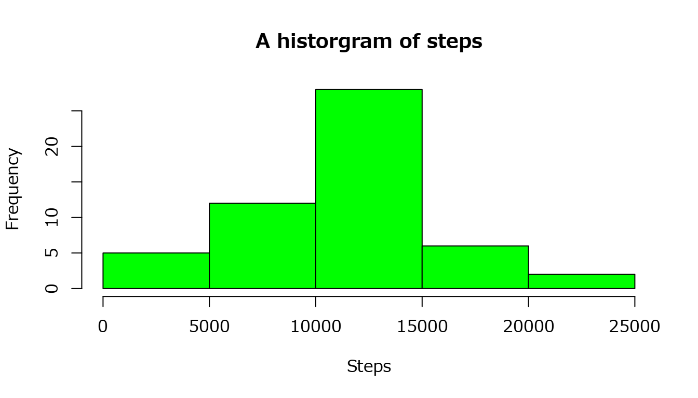
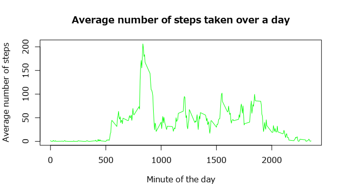
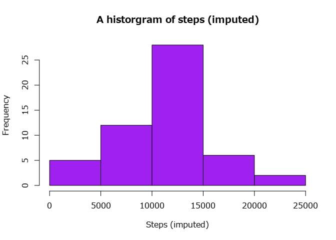
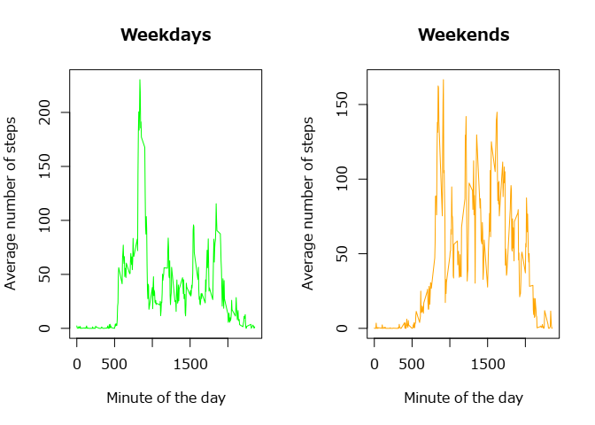

Setup figures location
library(knitr)
opts_chunk$set(fig.path="figure/")Needed for time units to see them in English
Sys.setlocale("LC_TIME", "C")## [1] "C"Loading libraries
library(lattice) #plotting
library(xtable) #table outputworking_path <- "/home/szebenyib/repr/RepData_PeerAssessment1/"
unzip(zipfile = paste(working_path,
"activity.zip",
sep=""),
exdir = working_path,
overwrite = FALSE)## Warning: not overwriting file
## '/home/szebenyib/repr/RepData_PeerAssessment1//activity.csvactivity <- read.csv(file = paste(working_path,
"activity.csv",
sep=""),
colClasses = c("numeric",
"character",
"numeric"),
na.strings = "NA",
header = TRUE)
activity$date <- as.Date(activity$date)A brief overview of the activity data frame:
str(activity)## 'data.frame': 17568 obs. of 3 variables:
## $ steps : num NA NA NA NA NA NA NA NA NA NA ...
## $ date : Date, format: "2012-10-01" "2012-10-01" ...
## $ interval: num 0 5 10 15 20 25 30 35 40 45 ...total_steps_per_day <- as.table(tapply(X = activity$steps,
INDEX = activity$date,
FUN = sum))
table <- xtable(total_steps_per_day)
print(table,
type = "html")| x | |
|---|---|
| 2012-10-01 | |
| 2012-10-02 | 126.00 |
| 2012-10-03 | 11352.00 |
| 2012-10-04 | 12116.00 |
| 2012-10-05 | 13294.00 |
| 2012-10-06 | 15420.00 |
| 2012-10-07 | 11015.00 |
| 2012-10-08 | |
| 2012-10-09 | 12811.00 |
| 2012-10-10 | 9900.00 |
| 2012-10-11 | 10304.00 |
| 2012-10-12 | 17382.00 |
| 2012-10-13 | 12426.00 |
| 2012-10-14 | 15098.00 |
| 2012-10-15 | 10139.00 |
| 2012-10-16 | 15084.00 |
| 2012-10-17 | 13452.00 |
| 2012-10-18 | 10056.00 |
| 2012-10-19 | 11829.00 |
| 2012-10-20 | 10395.00 |
| 2012-10-21 | 8821.00 |
| 2012-10-22 | 13460.00 |
| 2012-10-23 | 8918.00 |
| 2012-10-24 | 8355.00 |
| 2012-10-25 | 2492.00 |
| 2012-10-26 | 6778.00 |
| 2012-10-27 | 10119.00 |
| 2012-10-28 | 11458.00 |
| 2012-10-29 | 5018.00 |
| 2012-10-30 | 9819.00 |
| 2012-10-31 | 15414.00 |
| 2012-11-01 | |
| 2012-11-02 | 10600.00 |
| 2012-11-03 | 10571.00 |
| 2012-11-04 | |
| 2012-11-05 | 10439.00 |
| 2012-11-06 | 8334.00 |
| 2012-11-07 | 12883.00 |
| 2012-11-08 | 3219.00 |
| 2012-11-09 | |
| 2012-11-10 | |
| 2012-11-11 | 12608.00 |
| 2012-11-12 | 10765.00 |
| 2012-11-13 | 7336.00 |
| 2012-11-14 | |
| 2012-11-15 | 41.00 |
| 2012-11-16 | 5441.00 |
| 2012-11-17 | 14339.00 |
| 2012-11-18 | 15110.00 |
| 2012-11-19 | 8841.00 |
| 2012-11-20 | 4472.00 |
| 2012-11-21 | 12787.00 |
| 2012-11-22 | 20427.00 |
| 2012-11-23 | 21194.00 |
| 2012-11-24 | 14478.00 |
| 2012-11-25 | 11834.00 |
| 2012-11-26 | 11162.00 |
| 2012-11-27 | 13646.00 |
| 2012-11-28 | 10183.00 |
| 2012-11-29 | 7047.00 |
| 2012-11-30 |
hist(x = total_steps_per_day,
col = "green",
xlab = "Steps",
ylab = "Frequency",
main = "A historgram of steps")
mean_of_total_steps_per_day <- tapply(X = activity$steps,
INDEX = activity$date,
FUN = mean)
median_of_total_steps_per_day <- tapply(X = activity$steps,
INDEX = activity$date,
FUN = median,
na.rm = TRUE)
mean_median_table <- cbind(mean_of_total_steps_per_day,
median_of_total_steps_per_day)
colnames(mean_median_table) <- c("Mean of total steps per day",
"Median of total steps per day")
table <- xtable(mean_median_table)
print(table,
type = "html")| Mean of total steps per day | Median of total steps per day | |
|---|---|---|
| 2012-10-01 | ||
| 2012-10-02 | 0.44 | 0.00 |
| 2012-10-03 | 39.42 | 0.00 |
| 2012-10-04 | 42.07 | 0.00 |
| 2012-10-05 | 46.16 | 0.00 |
| 2012-10-06 | 53.54 | 0.00 |
| 2012-10-07 | 38.25 | 0.00 |
| 2012-10-08 | ||
| 2012-10-09 | 44.48 | 0.00 |
| 2012-10-10 | 34.38 | 0.00 |
| 2012-10-11 | 35.78 | 0.00 |
| 2012-10-12 | 60.35 | 0.00 |
| 2012-10-13 | 43.15 | 0.00 |
| 2012-10-14 | 52.42 | 0.00 |
| 2012-10-15 | 35.20 | 0.00 |
| 2012-10-16 | 52.38 | 0.00 |
| 2012-10-17 | 46.71 | 0.00 |
| 2012-10-18 | 34.92 | 0.00 |
| 2012-10-19 | 41.07 | 0.00 |
| 2012-10-20 | 36.09 | 0.00 |
| 2012-10-21 | 30.63 | 0.00 |
| 2012-10-22 | 46.74 | 0.00 |
| 2012-10-23 | 30.97 | 0.00 |
| 2012-10-24 | 29.01 | 0.00 |
| 2012-10-25 | 8.65 | 0.00 |
| 2012-10-26 | 23.53 | 0.00 |
| 2012-10-27 | 35.14 | 0.00 |
| 2012-10-28 | 39.78 | 0.00 |
| 2012-10-29 | 17.42 | 0.00 |
| 2012-10-30 | 34.09 | 0.00 |
| 2012-10-31 | 53.52 | 0.00 |
| 2012-11-01 | ||
| 2012-11-02 | 36.81 | 0.00 |
| 2012-11-03 | 36.70 | 0.00 |
| 2012-11-04 | ||
| 2012-11-05 | 36.25 | 0.00 |
| 2012-11-06 | 28.94 | 0.00 |
| 2012-11-07 | 44.73 | 0.00 |
| 2012-11-08 | 11.18 | 0.00 |
| 2012-11-09 | ||
| 2012-11-10 | ||
| 2012-11-11 | 43.78 | 0.00 |
| 2012-11-12 | 37.38 | 0.00 |
| 2012-11-13 | 25.47 | 0.00 |
| 2012-11-14 | ||
| 2012-11-15 | 0.14 | 0.00 |
| 2012-11-16 | 18.89 | 0.00 |
| 2012-11-17 | 49.79 | 0.00 |
| 2012-11-18 | 52.47 | 0.00 |
| 2012-11-19 | 30.70 | 0.00 |
| 2012-11-20 | 15.53 | 0.00 |
| 2012-11-21 | 44.40 | 0.00 |
| 2012-11-22 | 70.93 | 0.00 |
| 2012-11-23 | 73.59 | 0.00 |
| 2012-11-24 | 50.27 | 0.00 |
| 2012-11-25 | 41.09 | 0.00 |
| 2012-11-26 | 38.76 | 0.00 |
| 2012-11-27 | 47.38 | 0.00 |
| 2012-11-28 | 35.36 | 0.00 |
| 2012-11-29 | 24.47 | 0.00 |
| 2012-11-30 |
The median is zero when there are values. The reason for this is that five minutes were chosen for the length of the intervals. Therefore there are many zeroes and it is no surprise that the value in the ‘middle’ is zero. Please see this output as an example:
sort(activity[activity$date == "2012-11-29", "steps"])## [1] 0 0 0 0 0 0 0 0 0 0 0 0 0 0 0 0 0
## [18] 0 0 0 0 0 0 0 0 0 0 0 0 0 0 0 0 0
## [35] 0 0 0 0 0 0 0 0 0 0 0 0 0 0 0 0 0
## [52] 0 0 0 0 0 0 0 0 0 0 0 0 0 0 0 0 0
## [69] 0 0 0 0 0 0 0 0 0 0 0 0 0 0 0 0 0
## [86] 0 0 0 0 0 0 0 0 0 0 0 0 0 0 0 0 0
## [103] 0 0 0 0 0 0 0 0 0 0 0 0 0 0 0 0 0
## [120] 0 0 0 0 0 0 0 0 0 0 0 0 0 0 0 0 0
## [137] 0 0 0 0 0 0 0 0 0 0 0 0 0 0 0 0 0
## [154] 0 0 0 0 0 0 0 0 0 0 0 0 0 0 0 0 0
## [171] 0 0 0 0 0 0 0 0 0 0 0 0 0 0 0 0 0
## [188] 0 0 0 0 0 0 0 0 0 0 0 0 0 0 0 0 0
## [205] 0 0 0 0 0 0 0 0 0 0 0 0 0 0 0 0 0
## [222] 0 0 0 8 9 15 15 15 16 16 16 17 18 18 19 19 21
## [239] 21 22 23 23 24 24 25 26 28 32 33 35 36 38 38 39 40
## [256] 43 46 51 52 52 53 57 62 64 66 68 73 74 78 89 95 106
## [273] 120 123 159 240 249 254 264 307 310 349 351 391 463 488 553 568average_steps_per_interval <- tapply(X = activity$steps,
INDEX = as.factor(activity$interval),
FUN = mean,
na.rm = TRUE)
plot(y = average_steps_per_interval,
x = names(average_steps_per_interval),
type = "l",
col = "green",
xlab = "Minute of the day",
ylab = "Average number of steps",
main = "Average number of steps taken over a day")
most_active <- which(average_steps_per_interval == max(
average_steps_per_interval))It is the interval that begins at the 835.th minute, it is the 104. interval out of 288 intervals.
number_of_cases <- dim(activity)[1]
full_cases <- sum(complete.cases(activity))
partial_cases <- number_of_cases - full_casesThere are 17568 cases in the data frame, and 2304 have NA values.
It is always the steps variable that has missing values:
sum(is.na(activity$date))## [1] 0sum(is.na(activity$interval))## [1] 0Creating new data frame
activity_imputed <- activityCalculate the values used to replace NAs.
means <- tapply(X = activity$steps,
INDEX = activity$interval,
FUN = mean,
na.rm=TRUE)Repeat the values as long as there is data in the data frame
activity_imputed$imputed_steps <- meansAdd the imputed values only where NAs are found.
activity_imputed[is.na(activity_imputed$steps), "steps"] <- activity_imputed[
is.na(activity_imputed$steps), "imputed_steps"]Remove the temporary column
activity_imputed <- activity_imputed[ , 1:3]total_steps_per_day_imputed <- as.table(tapply(X = activity$steps,
INDEX = activity$date,
FUN = sum))
hist(x = total_steps_per_day_imputed,
col = "purple",
xlab = "Steps (imputed)",
ylab = "Frequency",
main = "A historgram of steps (imputed)")
mean_of_total_steps_per_day_imputed <- tapply(X = activity_imputed$steps,
INDEX = activity_imputed$date,
FUN = mean)
median_of_total_steps_per_day_imputed <- tapply(X = activity_imputed$steps,
INDEX = activity_imputed$date,
FUN = median,
na.rm = TRUE)
mean_median_table <- cbind(mean_median_table,
mean_of_total_steps_per_day_imputed,
median_of_total_steps_per_day_imputed)
colnames(mean_median_table) <- c("Mean of total steps per day",
"Median of total steps per day",
"Mean of total steps per day imputed",
"Median of total steps per day imputed")
table <- xtable(mean_median_table)
print(table,
type = "html")| Mean of total steps per day | Median of total steps per day | Mean of total steps per day imputed | Median of total steps per day imputed | |
|---|---|---|---|---|
| 2012-10-01 | 37.38 | 34.11 | ||
| 2012-10-02 | 0.44 | 0.00 | 0.44 | 0.00 |
| 2012-10-03 | 39.42 | 0.00 | 39.42 | 0.00 |
| 2012-10-04 | 42.07 | 0.00 | 42.07 | 0.00 |
| 2012-10-05 | 46.16 | 0.00 | 46.16 | 0.00 |
| 2012-10-06 | 53.54 | 0.00 | 53.54 | 0.00 |
| 2012-10-07 | 38.25 | 0.00 | 38.25 | 0.00 |
| 2012-10-08 | 37.38 | 34.11 | ||
| 2012-10-09 | 44.48 | 0.00 | 44.48 | 0.00 |
| 2012-10-10 | 34.38 | 0.00 | 34.38 | 0.00 |
| 2012-10-11 | 35.78 | 0.00 | 35.78 | 0.00 |
| 2012-10-12 | 60.35 | 0.00 | 60.35 | 0.00 |
| 2012-10-13 | 43.15 | 0.00 | 43.15 | 0.00 |
| 2012-10-14 | 52.42 | 0.00 | 52.42 | 0.00 |
| 2012-10-15 | 35.20 | 0.00 | 35.20 | 0.00 |
| 2012-10-16 | 52.38 | 0.00 | 52.38 | 0.00 |
| 2012-10-17 | 46.71 | 0.00 | 46.71 | 0.00 |
| 2012-10-18 | 34.92 | 0.00 | 34.92 | 0.00 |
| 2012-10-19 | 41.07 | 0.00 | 41.07 | 0.00 |
| 2012-10-20 | 36.09 | 0.00 | 36.09 | 0.00 |
| 2012-10-21 | 30.63 | 0.00 | 30.63 | 0.00 |
| 2012-10-22 | 46.74 | 0.00 | 46.74 | 0.00 |
| 2012-10-23 | 30.97 | 0.00 | 30.97 | 0.00 |
| 2012-10-24 | 29.01 | 0.00 | 29.01 | 0.00 |
| 2012-10-25 | 8.65 | 0.00 | 8.65 | 0.00 |
| 2012-10-26 | 23.53 | 0.00 | 23.53 | 0.00 |
| 2012-10-27 | 35.14 | 0.00 | 35.14 | 0.00 |
| 2012-10-28 | 39.78 | 0.00 | 39.78 | 0.00 |
| 2012-10-29 | 17.42 | 0.00 | 17.42 | 0.00 |
| 2012-10-30 | 34.09 | 0.00 | 34.09 | 0.00 |
| 2012-10-31 | 53.52 | 0.00 | 53.52 | 0.00 |
| 2012-11-01 | 37.38 | 34.11 | ||
| 2012-11-02 | 36.81 | 0.00 | 36.81 | 0.00 |
| 2012-11-03 | 36.70 | 0.00 | 36.70 | 0.00 |
| 2012-11-04 | 37.38 | 34.11 | ||
| 2012-11-05 | 36.25 | 0.00 | 36.25 | 0.00 |
| 2012-11-06 | 28.94 | 0.00 | 28.94 | 0.00 |
| 2012-11-07 | 44.73 | 0.00 | 44.73 | 0.00 |
| 2012-11-08 | 11.18 | 0.00 | 11.18 | 0.00 |
| 2012-11-09 | 37.38 | 34.11 | ||
| 2012-11-10 | 37.38 | 34.11 | ||
| 2012-11-11 | 43.78 | 0.00 | 43.78 | 0.00 |
| 2012-11-12 | 37.38 | 0.00 | 37.38 | 0.00 |
| 2012-11-13 | 25.47 | 0.00 | 25.47 | 0.00 |
| 2012-11-14 | 37.38 | 34.11 | ||
| 2012-11-15 | 0.14 | 0.00 | 0.14 | 0.00 |
| 2012-11-16 | 18.89 | 0.00 | 18.89 | 0.00 |
| 2012-11-17 | 49.79 | 0.00 | 49.79 | 0.00 |
| 2012-11-18 | 52.47 | 0.00 | 52.47 | 0.00 |
| 2012-11-19 | 30.70 | 0.00 | 30.70 | 0.00 |
| 2012-11-20 | 15.53 | 0.00 | 15.53 | 0.00 |
| 2012-11-21 | 44.40 | 0.00 | 44.40 | 0.00 |
| 2012-11-22 | 70.93 | 0.00 | 70.93 | 0.00 |
| 2012-11-23 | 73.59 | 0.00 | 73.59 | 0.00 |
| 2012-11-24 | 50.27 | 0.00 | 50.27 | 0.00 |
| 2012-11-25 | 41.09 | 0.00 | 41.09 | 0.00 |
| 2012-11-26 | 38.76 | 0.00 | 38.76 | 0.00 |
| 2012-11-27 | 47.38 | 0.00 | 47.38 | 0.00 |
| 2012-11-28 | 35.36 | 0.00 | 35.36 | 0.00 |
| 2012-11-29 | 24.47 | 0.00 | 24.47 | 0.00 |
| 2012-11-30 | 37.38 | 34.11 |
The means have not changed since imputing the means will not move their value. The medians have moved away from NA values to the same value as every interval has received the average that is typical for that interval. And therefore the values are the same for the days where all the values were missing.
activity_imputed$weekday_or_weekend <- "weekday"
activity_imputed$weekday_or_weekend[grep("Saturday|Sunday",
weekdays(activity_imputed$date))] <- "weekend"
activity_imputed$weekday_or_weekend <- factor(
activity_imputed$weekday_or_weekend)mean_of_total_steps_per_weekday_imputed <- tapply(
X = activity_imputed[activity_imputed$weekday_or_weekend == "weekday",
"steps"],
INDEX = activity_imputed[activity_imputed$weekday_or_weekend == "weekday",
"interval"],
FUN = mean)
mean_of_total_steps_per_weekend_imputed <- tapply(
X = activity_imputed[activity_imputed$weekday_or_weekend == "weekend",
"steps"],
INDEX = activity_imputed[activity_imputed$weekday_or_weekend == "weekend",
"interval"],
FUN = mean)
par(mfrow = c(1, 2))
plot(y = mean_of_total_steps_per_weekday_imputed,
x = names(mean_of_total_steps_per_weekday_imputed),
type = "l",
col = "green",
xlab = "Minute of the day",
ylab = "Average number of steps",
main = "Weekdays")
plot(y = mean_of_total_steps_per_weekend_imputed,
x = names(mean_of_total_steps_per_weekend_imputed),
type = "l",
col = "orange",
xlab = "Minute of the day",
ylab = "Average number of steps",
main = "Weekends")
The sleeping pattern is clearly visible on both weekdays and weekends. Weekdays tend to start earlier and they are more active from a matter of steps in the earlier hours. In contrast to that weekends are more active in the afternoon.